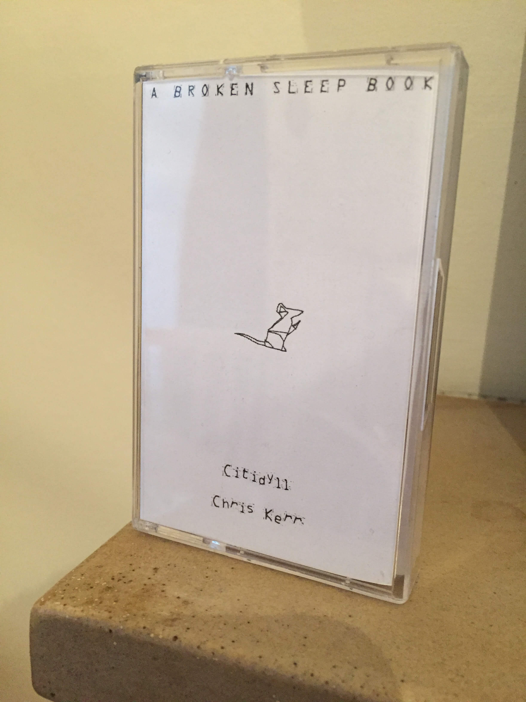
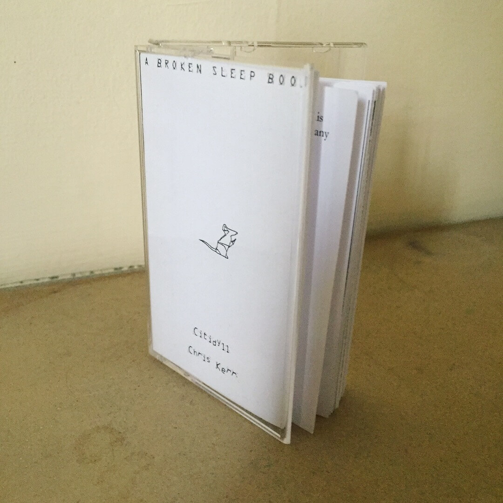
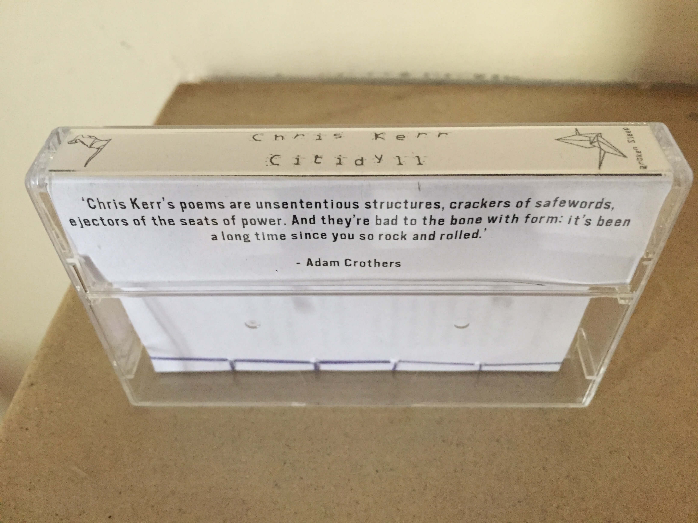
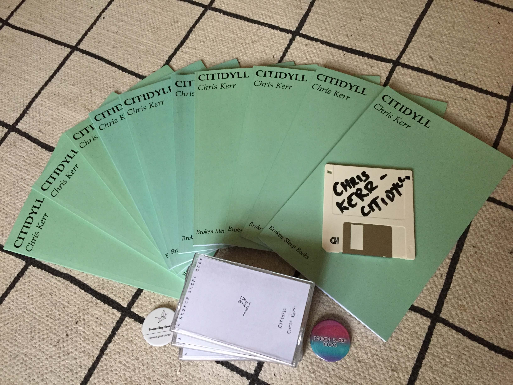
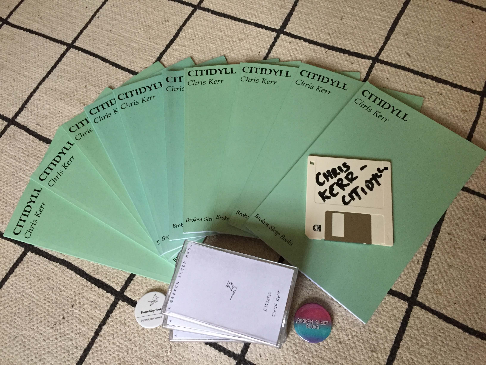

Citidyll
Citidyll is my first book, and the first book published by Broken Sleep Books in 2018. Citidyll explores the intersection of city life with nature in a series of lyrical poems. The publisher describes it as follows:
- "a rip roaring ride through the decaying heart of the modern metropolis. Rythmically complex and infused with the Wasteland's heap of broken images heaped onto yet more broken images, Citidyll confirms a grave suspicion: the nightmare of the dystopia is full realised and it is where we are living right now. Exuberant and stylish poetry from a huge new talent."
Purchase Citidyll from Broken Sleep Books.
Citidyll was published in two different versions: as a "cassette" tape and as a paperback pamphlet.
Cassette version
The first version of Citidyll was published as a miniature, hand-sewn book in a cassette tape. A PDF eBook was published on a floppy disk.



Paperback version
The second version of Citidyll was published as a paperback pamphlet.
 

Aaron Kent (Broken Sleep Books) on Citidyll
Aaron Kent, the editor of Broken Sleep books, on publishing Citidyll:
- "I began Broken Sleep Books, because I had read Chris Kerr’s Citidyll and felt it deserved to be published and that it deserved a readership." — Unicorn flavour, a conversation with Aaron Kent on The Friday Poem
- 12 or 20 (small press) questions with Aaron Kent on Broken Sleep Books on Rob McLennan's blog
- An Interview with...Broken Sleep Books by Fly On the Wall Press
- An interview with alumni Aaron Kent, founder and creative director of Broken Sleep Books with FalWriting